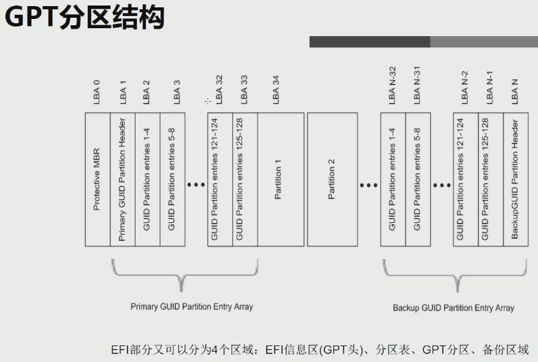
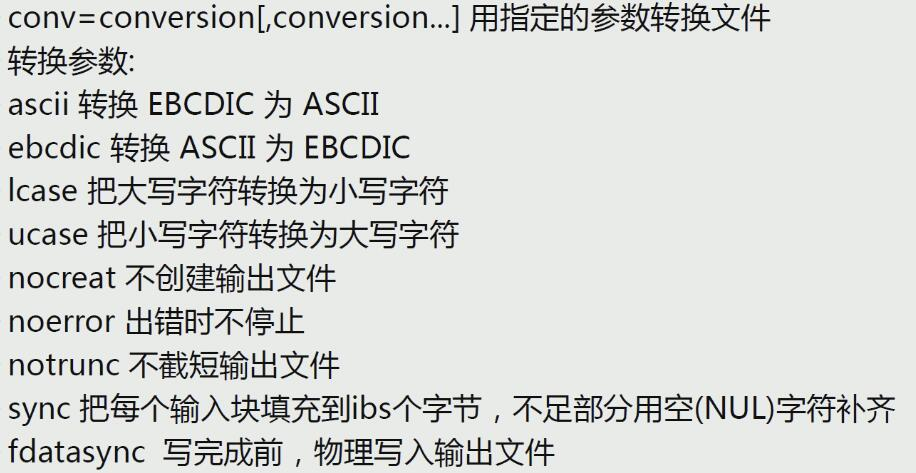
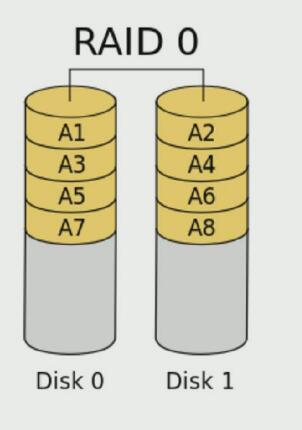
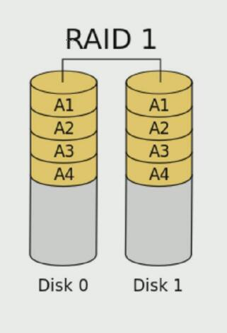
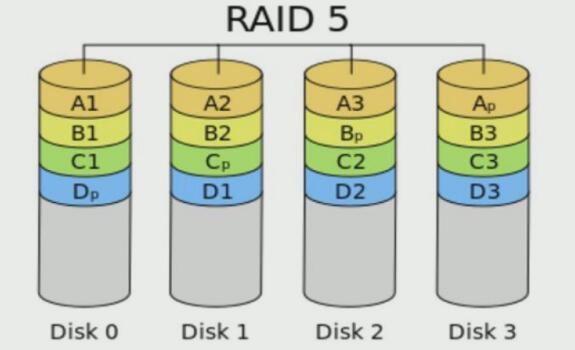
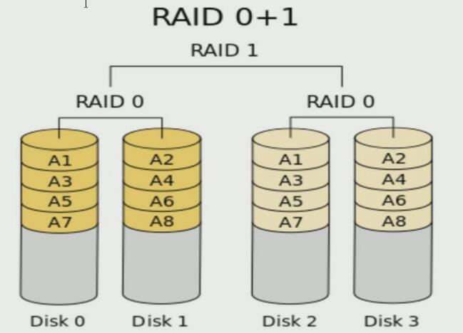
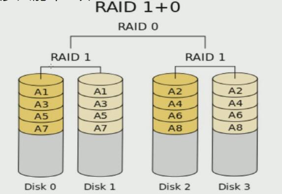
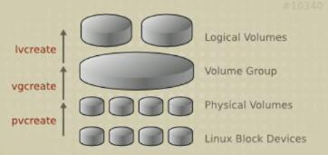

磁盘工作原理
不同硬盘标识：a-z，aa，ab…
/dev/sda，/dev/sdb
同一磁盘的不同分区：1，2，…
/dev/sda1，/dev/sda2，…
磁盘存储术语：head(磁头)，track(磁道)，cylinder(柱面)，sector(扇区)
磁盘使用步骤：磁盘分区 -> 分区上创建文件系统 -> 将分区挂载到目录
分区管理
分区原因
- 隔离系统和程序，可安装多个OS
采用不同文件系统
优化I/O性能
- 实现磁盘空间配额限制
- 提高修复速度
MBR分区管理
分区不超过2T
一块硬盘最多有4个主分区，也可以3主分区+1扩展分区（扩展分区包含N给逻辑分区）
MBR分区结构：

GPT分区管理
支持128个分区，分区可达ZB级别
GPT分区结构

分区管理命令
- 列出块设备：
lsblk - 查看块设备的UUID（通用唯一识别码）：
blkid - 创建分区：
- 创建MBR分区：
fdiskfdisk -l查看当前分区情况fdisk [device]，管理分区，常用子命令：- p：分区列表
- t：更改分区ID（输入L查询，不同的ID标识分区的类型）
- n：创建新分区
- d：删除分区
- v：校验分区
- u：转换单位
- w：保存退出
- q：不保存退出
- fdisk实时更改硬盘的分区，分区完成后注意与内存分区表同步（partprobe），查看内核是否已经识别新的分区
cat /proc/partitions。
- 创建GPT分区：
gdisk，用法与fdisk相似 - 高级分区操作：
partedparted命令操作都是实时生效，需谨慎操作parted /dev/sdb mklabel gpt：设置/dev/sdb这块磁盘为gpt类型parted /dev/sdb print：打印/dev/sdb的分区信息parted /dev/sdb mkpart primary 1 200：设置一个分区，从1MB到200MB，大小为199MB（注意分区需是连续空间）parted /dev/sdb rm 1：删除第一个分区parted -l：列出所有硬盘的分区信息
- 创建MBR分区：
- 重新设置内存中的内核分区表版本：
partprobe
- 列出块设备：
文件系统管理
查看当前OS支持的文件系统：
cat /proc/filesystems创建文件系统：
mkfs -t [type] [device]：例如mkfs -t xfs /dev/sdb2，若要创建swap类型，使用mkswap /dev/xxx命令管理文件系统：
tune2fs：重新设定ext系列文件系统参数的值-l：查看指定文件系统superblock信息-L 'LABEL'：修改卷标-O：文件系统属性的启用或禁用
dumpe2fs：显示ext文件系统信息，将磁盘块分组管理xfs_info 挂载点：显示已挂载的xfs文件系统信息
文件系统检测和修复：
- 文件系统故障常发生于死机或非正常关机后，注意一定要取消挂载后执行修复命令
fsck、e2fsck、xfs_repair
常用工具：
df：查看文件系统和磁盘空间使用情况，常用选项-T,-hdu -h /xxx/yyy：查看某目录总体空间占用状态，--max-depth=3指定最大目录层级为3dd：convert and copy a file- 用法：
dd if=/x/y of=/a/b bs=# count=# if=/x/y：从指定文件读取of=/a/b：写入到指定文件ibs=size：一次读size个字节obs=size：一次写size个字节bs=size：block size，指定块大小(既是ibs也是obs)cbs=size：一次转换size个字节skip=blocks：从开头忽略blocks个ibs大小的块，只复制之后的内容seek=blocks：从开头忽略blocks个obs大小的块，用if中复制的内容替换blocks个obs大小的块之后的内容。count=n：复制n个bs- 
备份：
dd if=/dev/sdx of=/dev/sdy：整盘备份到另一磁盘dd if=/dev/sdx of=/xxx/image：整盘备份到文件dd if=/dev/sdx | gzip > /xxx/image.gz：整盘备份并压缩
恢复：
dd if=/xxx/image of=/dev/sdxgzip -dc /xxx/image.gz | dd of=/dev/sdx
- 用法：
挂载设备
将分区挂载到目录，则该目录下的文件都存储于该分区中；若有其他分区挂载在该目录的子目录下，则子目录下的文件存储与另一分区中。
挂载点下原有文件在挂载完成后会被临时隐藏，因此挂载点目录一般为空。
一个分区可以同时挂载在多个目录下，一个目录只能与一个分区关联
实现永久挂载需要写入配置文件
/etc/fstab，使用blkid查看UUID（也可使用设备分区名例如/dev/sda2）并按格式写入配置文件；若需要更改挂载点所属文件系统属性（是否启用acl，suid，exec等），亦可在该配置文件中更改，默认为defaults，然后mount -o remount /dev/xxx重新挂载使更改生效swap的挂载：写入
/etc/fstab，挂载点和文件系统均为swap，保存退出后键入swapon -a;swapoff命令取消交换分区。mount /dev/sda2 /mnt：将分区sda2挂载在/mnt目录下-r：只读挂载-w：读写挂载，默认mount -B 目录1 目录2：类似与软连接的效果，两个目录的文件共享。-o options：挂载文件系统的选项
umount /mnt：取消挂载cat /etc/mtab：查看目前的挂载情况查看挂载情况：
findmnt 挂载点/设备分区查看正在访问指定挂载点的进程：
lsof 挂载点、fuser -v 挂载点终止所有正在访问指定挂载点的进程：
fuser -km 挂载点
外围设备使用
使用光盘：
- 手动挂载：
mount /dev/cdrom /mnt - 操作光盘：
eject弹出光盘；eject -t弹入光盘 - 创建ISO文件：
cp /dev/cdrom /root/xxx.iso；mkisofs -r -o ./xxx.iso /etc…
- 手动挂载：
挂载USB介质：
- 查看USB设备是否识别：
lsusb - 被内核探测为SCSI设备：
/dev/sdaX、/dev/sdbX或类似的设备文件 - 手动挂载：
mount /dev/sdbX /mnt
- 查看USB设备是否识别：
管理虚拟内存
swap交换分区是系统内存的补充，支持虚拟内存，当没有足够的内存保存系统处理的数据时会将数据写入swap分区
推荐系统swap空间
| 系统RAM | 推荐的swap空间 | 允许机器休眠的swap建议 |
| :————: | :——————: | :——————————: |
| 低于2GB | RAM的倍数 | RAM的三倍 |
| 2GB - 8GB | 等于RAM | RAM的倍数 |
| 8GB - 64GB | 8GB | RAM的1.5倍 |
| > 64GB | 16GB | 不建议使用休眠功能 |free：查看内存使用情况
RAID管理
RAID：Redundant Arrays of Independent Disks（独立冗余磁盘阵列）
- 提高IO能力：磁盘并行读写
- 提高容错性
- 多块磁盘组织在一起工作
- 实现方式：
- 外接式：通过扩展卡提供适配能力
- 内接式：主板集成RAID控制器，安装OS前在BIOS里配置
- 软件RAID：软件实现
RAID级别：
RAID-0：同一文件分块存储在多块硬盘上，读写性能提升，无容错能力

RAID-1：同一文件完全一样地存储于两块磁盘（镜像），读性能提升，写性能略有下降，有容错能力，磁盘利用率只有一半

RAID-5：读写性能提升，至少3块磁盘，有容错能力（允许最多1块磁盘损坏），每一块磁盘都划分一部分空间充当校验位

RAID-6：读写性能提升，至少4块磁盘，两个校验位，允许最多2块磁盘损坏，容错性较RAID-5高

RAID-10与RAID-01（实际使用RAID-10，RAID-10容错性较RAID-01好）


RAID-50

RAID-7：自身带操作系统和管理工具，理论上性能最高的RAID模式
LVM（逻辑卷管理器）
LVM：允许对卷进行方便操作的抽象层
将物理块设备指定为物理卷
用多个物理卷来创建一个卷组（物理卷是用固定大小的物理区域[PE,physical extent]来定义的）
从卷组中划分逻辑卷，可在逻辑卷上创建文件系统，逻辑卷大小可扩展。
示意图：


使用逻辑卷步骤：
- 将设备指定为物理卷，例如
pvcreate /dev/sdb1 /dev/sdd或pvcreate /dev/sd{b1,d}，同时将分区和磁盘指定为物理卷。（如果是分区，需要将分区ID改为8e，表示Linux LVM类型） - 用多个物理卷创建卷组，
vgcreate [选项] vgName pv1 pv2 ...，例如vgcreate -s 16M vg0 /dev/sdb1 /dev/sdd，选项-s指定PE大小。 - 从卷组中划分逻辑卷，
lvcreate -n mysql -L 8G vg0，-n指定逻辑卷名，-L指定大小，-l也是指定大小但是单位是PE个数。 ll /dev/vg0/mysql发现/dev/vg0/mysql为软链接，指向/dev/dm-0，其另一软链接为/dev/mapper/vg0-mysql，若继续创建逻辑卷，其真实设备名依次为/dev/dm-1、/dev/dm-2…- 在逻辑卷上创建文件系统，
mkfs.xfs /dev/vg0/mysql - 挂载，
mount /dev/vg0/mysql /mnt/mysql；将挂载写入配置文件/etc/fstab，在vim扩展命令模式下键入r!blkid /dev/vg0/mysql进行修改
- 将设备指定为物理卷，例如
列出现有的物理卷：
pvs、pvdisplay列出现有卷组：
vgs、vgdisplay列出现有逻辑卷：
lvs、lvdisplay扩展现有逻辑卷：
lvextend -l +48%free /dev/vg0/mysql：剩余卷组的48%分配给逻辑卷，亦可使用PE数进行分配lvextend -l +200 /dev/vg0/mysql；此时使用lsblk或者fdisk -l查看已分配成功，但是df查看并未改变，还需要为新扩展的逻辑卷创建相同的文件系统xfs：
xfs_growfs 挂载点ext：
resize2fs 逻辑卷名（注意xfs与ext的区别）- 亦可一次搞定（加上
-r选项）：lvextend -r -l +xxx /dev/vg0/mysql
扩展现有的卷组：
vgextend vg0 PV名删除逻辑卷、卷组、物理卷：迁移数据 ->
umount /mnt/mysql->lvremove /dev/vg0/mysql->vgremove vg0->pvremove /dev/sdb1 /dev/sddLVM快照管理：
- 逻辑卷的快照需要与该逻辑卷在同一个卷组，且快照的容量小于等于逻辑卷
- 逻辑卷中每一个发生修改的文件都会备份到快照中
- 使用快照：
lvcreate -n mysql_snapshot -s -L 1G /dev/vg0/mysql：创建逻辑卷mysql的快照，选项-s用于创建快照，快照上的文件系统与原逻辑卷相同- 挂载快照到目录：
mount -o nouuid /dev/vg0/mysql_snapshot /mnt/snap，由于快照的UUID与原逻辑卷一样，所以挂载时需要指定nouuid选项，不然挂载不上（xfs是这样，ext4不用） - 还原快照到逻辑卷（逻辑卷恢复为快照）：
umount /mnt/snap,umount /mnt/mysql：卸载快照和逻辑卷lvconvert --merge /dev/vg0/mysql_snapshot：还原，此时快照已经删除mount /dev/vg0/mysql /mnt/mysql：重新挂载